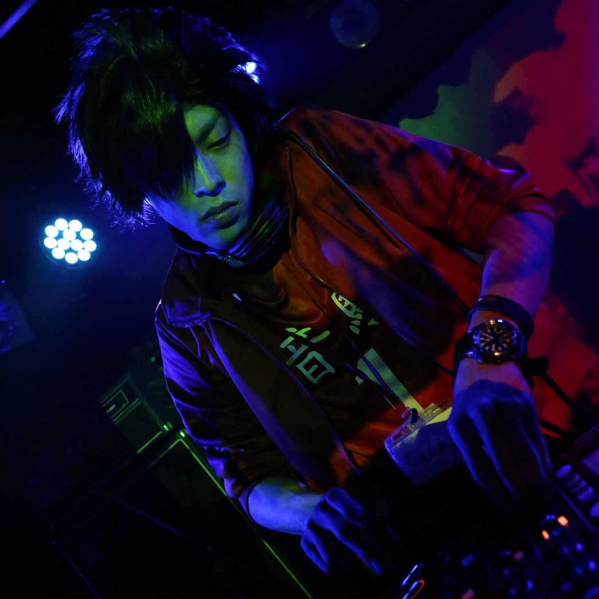

INFORMATION
BunGeee☆サミット
高知県で年に1度開催の西日本アニクラ大集合イベント
2017.11.18(sat)
@高知ロワイヤル
OPEN 21:00 START 22:00
Ticket ¥2,500(+1D)
EVENT CONCEPT
旅行大好きBunGeee☆オーガナイザーサーモン太郎さんが高知に定期的にくる口実と、お祭り大好きVJ aithの思惑が合致してできた年に一度の西日本どんちゃん騒ぎイベント♪
初回は四国+BunGeee☆チームでワイワイやっていたが2回目より範囲を西日本にまで拡大！
カツオに魅了された西日本のDJ達が高知に集合し、高知ロワイヤルをジャック。空き店舗を利用して2フロアでフロアを藁焼きのように熱く盛り上げる♪
年末の高知で多くの人を巻き込んだアニクラが開催！アニソン×J-POP×Remixがかかります。
SPECIAL
現在放送中のTVアニメ「18if」から主題歌集が発売されることを記念して全国のアニクラで開催される「【18if】夢ナイトツアー」が高知でも開催決定！！
高知県では、11月18日に開催される西日本10個所のアニソンクラブが一堂に集まるイベント「バンジーサミット」にて、18ifとのコラボイベントが行われる。
会場ではTeddyLoid、R・O・N、じんの手がける楽曲や、水瀬いのり演じるネネのラップ曲などバライティに富んだ18ifの楽曲がDJの手により流され、スクリーンでは大迫力のアニメ映像やゲーム映像を投影。ファンにはたまらない「夢世界」になる事間違いなし！
当日は会場限定の特典も満載！
キミもアニクラで「18if」の世界感を楽しもう！！
18if スペシャルコラボ！
18if スペシャルコラボ！
現在放送中のTVアニメ「18if」から主題歌集が発売されることを記念して全国のアニクラで開催される「【18if】夢ナイトツアー」が高知でも開催決定！！
高知県では、11月18日に開催される西日本10個所のアニソンクラブが一堂に集まるイベント「バンジーサミット」にて、18ifとのコラボイベントが行われる。
会場ではTeddyLoid、R・O・N、じんの手がける楽曲や、水瀬いのり演じるネネのラップ曲などバライティに富んだ18ifの楽曲がDJの手により流され、スクリーンでは大迫力のアニメ映像やゲーム映像を投影。ファンにはたまらない「夢世界」になる事間違いなし！
当日は会場限定の特典も満載！
キミもアニクラで「18if」の世界感を楽しもう！！
リアルアキバボーイズ×Re:animation
リアルアキバボーイズ
×
Re:animation
「RAB（リアルアキバボーイズ）」と「Re:animation（リ・アニメーション）」がタッグを組んだ新たなアニソンMIX CD、「このアニソンで踊りたい～アニソン・ダンス・クラシックス30+～」の発売記念のリリースイベントが高知県でも開催が決定！！
高知県では11月18日に開催される西日本10個所のアニソンクラブが一堂に集まるDJイベント「BunGeee☆Summit」にて、Re:animationから後藤王様、銀星が出演！！！
1年に1度のビックイベントをさらに盛り上げる！！最高のDJを聞きながら、踊って騒いで楽しもう！！
SPECIAL GUEST
RE:animation
ANISON INDEX!!
新宿歌舞伎町でスタートしたアニソンDJのキャリアは20年を超える。
数多のイベントでアニソンDJを披露の傍ら東京ゲームショーの
コスプレステージでのステージコントロールDJ、
Y150横浜博覧会等大型イベントのステージディレクションも務める。
近年は秋葉原Mogra開催のANISONINDEXではレギュラーを努め続け
都市型大型FESProject RE:animationのDJとして立ち上げに参加し
数多の伝説を作り続ける。
2015年にはCountDownAsiaIN Jakartaにてインドネシアのフェスをはじめ
上海、香港、台湾でもアニソンを鳴らし続ける。
TVアニメ『彼女がフラグをおられたら』公式イベントDJや
幕張メッセでの「GRANRODEO 10th ANNIVERSARY LIVE 2015 ROCK☆SHOW」オープニングDJ。
「Anime Japan」関連イベント「AJ Night」ではラブライバー初期勢として
執念の集大成”ラブライブ！μ’s DJMIX by Re:animation”を披露。
稲城市情報発信基地ベアプラスレセプションパーティーではメカデザイナー
大河原邦男さんの眼前でデザインのメカ作品のみのDJプレイ。
とちテレアニメフェスタでは2015年から３年連続出演。
西陣 CR交響詩篇エウレカセブンレセプションパーティ、
HEIWA CR戦国乙女ファン大感謝での戦国乙女花リリースDJ、
RE:animation10 MAXBEAT!!presentsSpecialDjとして参加しパチンコ業界でも活躍。
SPECIAL GUEST2
1998年にハウスDJとしてキャリアをスタートするも
紆余曲折あって2011年にアニソン原曲へ転向して今に至る。
ハーモニックミキシングをベースにぬるぬるっと日々
アニソンを繋いでいる。Serato/Rekordbox使用。
自分がよいと思う曲をプレイにとりまぜておススメするのが
大好きだが、よく「こじらせすぎｗｗｗ」と言われるのが悩み。
R2A
1998年にハウスDJとしてキャリアをスタートするも
紆余曲折あって2011年にアニソン原曲へ転向して今に至る。
ハーモニックミキシングをベースにぬるぬるっと日々
アニソンを繋いでいる。Serato/Rekordbox使用。
自分がよいと思う曲をプレイにとりまぜておススメするのが
大好きだが、よく「こじらせすぎｗｗｗ」と言われるのが悩み。
TEAM
-
2009年に大阪キタでスタートしたアニソン&J-POPパーティー☆
BunGeee HP
2010年からは内装が超豪華でラグジュアリーな京橋BERONICAをホームに開催している。
本編の他にボウリング場で開催されるBunGeee☆BOWL、夏にはプールパーティーとなるBunGeee☆onROOFTOP、 日本橋ストフェスアフターや徳島マチアソビ野外ブースへの出張などなど特色ある番外編も積極的に開催している。
2014年に台湾で海外開催となるアニクラ、ACG BunGeee★をスタート。2015年には高知でのコラボ企画BunGeee☆×四国アニクラサミットに参加。 2017年には春には東京アニ×キットに参加。9月には日本最南端最西端のアニクラAninchuと石垣島でコラボパーティーも開催している。 -
DJ tamu
MIXBOMB/BunGeee☆
Twitter MIXBOMB DJスクール「IDPS」関西最大級の動員を誇るアニメ×J-POP融合イベント「MIXBOMB」& 2011年より毎年開催される関西の夢のオールスターイベント「FES」主催。
サブカル以外の幅広いジャンルにも参加し、DJ・VJアーティストやオーディエンスからの厚い支持によってシーンを牽引し続けている。
近年では、超都市型屋外音楽フェスティバル「Re:Animation」や「ANIMAX MUSIX」公式DJイベントへも2年連続で出演、活動範囲は関西だけに留まらず全国各地へと精力的に活動している。
過去幾多のゲスト出演、台湾で開催された「ACG BunGeee」、韓国ソウルでの「OTACOS」にも出演を果たし海外でも注目を集めている。
2017年6月より、海外に向けたインターナショナルDJプロダクションスクール「IDPS」大阪校のDJ常任講師として在籍。
ANIME・J-POP等を中心とし、座右の銘である"No Music No Life"を元にフロアを踊らせ続ける。 -
DJ kyon a.k.a E-ROGicS
CAOFF WEST/BunGeee☆
Twitter関西アニソンクラブイベントの黎明期より数多くのエポックメイキングなパーティーに参加。
【CAOFF WEST】【BunGeee☆】等、老舗パーティーのレジデンツをつとめるとともに、POPSや特殊なジャンル特化型パーティーへの参加、またTecnhno Party【Trigonofuncth】等を主催するなど活動は多岐に渡る。
昭和のアニメソングから最新曲、果てはCMソングからテクノなどのクラブミュージック、ニコニコ動画などありとあらゆる楽曲を自在にミックスするスタイルは一部に熱狂的なマニアを持つ。
座右の銘は「スタイルはあって無きが如し」
ちなみにたぶん日本最高齢の"アニソン"DJである（ソース未確認） -
DJ&VJ 弥
BunGeee☆
Twitterハイパーメディアオーガナイザーことけんしろうによる秘密組織けんしろう会（懐）から参戦のVDJ バーカンにこもって財布を軽くする担当。
大阪でバンドマンをしていたはずがいつの間にか海外DJデビューをするという事態にもなっていて本人はついていけていない。 -
DJ 一凛
BunGeee☆/ヲタ霊
Twitterk-chanとかのによるキュートな双子DJユニット一凛☆
アニソンの他にＶ系も得意ジャンルとし、双子の息の合ったチームワークでかわいく熱くのDJプレイを展開させフロアを盛り上げる♪ -
VJ としぴー
MILK BACK DROP/BunGeee☆/コストリ
TwitterYoutube、ニコニコ動画において100万再生を達成する卓抜した映像センスで、2016年夏よりVJを本格始動。
歴は浅いながらも、Rita、佐倉紗織など様々なトップアーティストと共演し、 今や月7本のイベントに出演する売れっ子VJ。
コスプレイベント『コストリ』の主催もこなし、モデル、カメラマン、コスプレイヤーなど様々な方面で活躍する。
好きな動物はあるぱか。 -
-

アニソン原曲:remix:J-POP ⇨楽しい！！ をモットーに高知で月１開催中のパーティーです♪
Anibeats HP
アニメのOP、EDやキャラクターソング、劇中歌などをDJが再生し、それに合わせてVJが映像を流すので、盛り上がり間違い無し！
昔のアニメソングから最新のアニメソング、歌謡曲、演歌、洋楽など多種多様な音楽が流れますよ！
おたくBARでの開催なので、スタッフ陣もアニメ好き！店長が女性でスタッフも女性が多く女性が一人で来ても優しく盛り上がり方をレクチャーしてくれますよ♪
またスタッフはコスプレでして出迎え！高知のアニクラで楽しく遊べるイベントです！
お客さんは高知だけでなく四国から遊びにきてくれてますよ。 -
DJ あっきー
Anibeats/アニとさ/Keller
Twitter SoundCloud三度の飯よりナンが好き。ナンを食して16年、行きつけのインド料理屋はマサラ。高知市内のアーケードに出店しているマサラはカレーを頼むとナンが食べ放題だと知り最近はそこしか行かない。
高校時代からキーボードを本格的に勉強し始めその傍らで下手くそながらドラムを叩いていた。
最近は学生料金で手に入れたCubaseを使い楽曲制作にも勤しむが周りのレベルが高すぎてノックアウト寸前。
DJではアニソン原曲を中心にプレイ。キーボード、ドラム、作詞作曲、Web制作、写真と色々やっているがその技術は発展途上な模様。今後に期待するしかない。
音ゲーから音楽にのめり込んだおかげで好きな音楽ジャンルはハッピーハードコア。しかしハウス系やkawaii Future bassなども聞く。メロディアスでハット裏打ちの曲がナンの次に大好物。 -
DJ 飛鳥
Anibeats/アニとさ/Keller/カツヲタ
Twitter四国を中心に活動するDJ&ギタリストの二刀流プレイヤー。
主に男性向け原曲を軸にしたスタイルで活動中。
最近の生き甲斐はけものフレンズのかばんちゃん -
DJ ふーみん
Anibeats
Twitter中学時代にシスプリを始めた事で二次元に目覚める。
四葉のトレカを筆箱に貼っていた為、女子だけではなく男子にも引かれ出したが、家に帰って東京ミュウミュウを見て強く生きてきた。
原曲で、男性向けの萌えアニメが得意なフレンズ。
-
みんなで楽しめる広島のアニソンクラブイベント、それが"オルフラ"！
オルフラ Twitter
偶数月第4土曜に広島Sound House ASTROにて開催！ アニメ・ゲーム・ボカロなど、いろんなジャンルがフラットに聞けちゃいます！
さらに、コスプレイヤーにも嬉しいサービスがいっぱい！ 女性更衣室あり、撮影ブースあり、更に会場内は禁煙！ 昼開催で、学割、コス割もあって参加しやすい！ 是非一度遊びに来てください！クルー一同お待ちしてます！ -
DJ おみそ
オルフラ(広島)/黒歴史はing!(徳島)
Twitter2013年より岡山県、徳島県のサブカルイベントに携わり始める。
満を辞した2015年、鳥取県に居住しつつも徳島県でDJ活動をスタート。"黒歴史はing!"のレジデントDJとなり、徐々に県外へ活動の幅を広げる。徳島学祭アニクラ、昨年の高知バンサミなどの四国地方での出演はもちろん、大阪"BunGeee☆"にも出演を果たした。現在は広島県へ居住地を移し、広島"オルフラ"でレジデントDJも務める。
J-pop、アニソンの原曲プレイを得意とし、イベントコンセプトに合わせた選曲で場を盛り上げる。特にジャニーズを始めとしたアイドルへの愛が深く、アツいブースパフォーマンスでお客を引き込んでいく。
-
やばきゅー部
やばきゅーぶ HP広島で毎月第一日曜日に開催してるアニソンパーティイベント「やばきゅーぶ」
みんなが全力で楽しめるをモットーに毎月お祭り騒ぎしている。そんなやばきゅーぶよりチームやばきゅー部としてバンサミに参戦！高知で最高のパーティを！
-
毎月第四金曜日にclub GRINDHOUSEにて開催している徳島のブチアゲ系アニクライベント！ある回は出演DJの平均年齢19歳！？
夜アソビ Twitter
徳島から若さ溢れるパワーをお見せします！ -
DJ mikimiki
夜★アソビ/そうまち/Ear lemonade
2015年開催の第一回学祭アニクラ、そうまちでアニクラを知り、自分もこの文化にもっと触れたい！と言う思いで2016年5月より徳島でDJに。
アニソン原曲やボカロを主として、思わぬ箇所炸裂DJとしてたまに爆弾を仕掛けつつニコニコしながら活動している。 -
DJ Zong
夜★アソビ/そうまち/アイフェス徳島
2015年4月にアニクラの楽しさを知り、同年11月に自身の文化祭にてDJデビュー。以降、徳島を中心にAPOP-DJとして活動を始める。
アニソン・ゲーソン・J-POP・例のアレなど様々なジャンルの中に必ずアイマス曲を織り交ぜる、PでアレなDJプレイを得意とする。
-
アニソンを中心にDJが選曲、お届けするクラブイベント、☆clubGREENS（日曜昼）☆clubVIOLET（土曜深夜）そしてニジゲン好きな人々の多彩なショーケース/BANDが集まって形になる、みんなの総合遊び場イベント、☆ニジゲンフリークス!! 色々ありますが全部で一つのパーティです。 コスプレ、オタ芸、大歓迎。踊れる人は踊っていいし案外特撮やボカロ、東方曲も拾います。 なんでもアリの多彩なお客様が自慢のニジフリ、なにがなんでも楽しいパーティ。さいきん愛媛県松山市を騒がせております。よろしくお願いします
ニジゲンフリークス HP -
DJ FITT
ニジゲンフリークス!!/HE@RT-BEAT!!/MIXXX-UP!!!/Numb.ROCK PARTY/柿の種ミュージックホール/東方東雲夜会
Twitter持ち前の好奇心と計画性の無さでニジゲンフリークス!!、Numb.ROCK PARTY、MIXXX-UP!!!、柿の種ミュージックホール、HE@RT-BEAT!! 等数々のイベントを主催するライブハウス店長。
主に00年代以降の美少女に傾倒しており、THE IDOLM@STERにはとりわけ情熱を持ってスピンする。
音楽、アニメ、旅、鉄道、廃墟、階段など引っ掛かりを覚えたものを節操無く取り込んだボーダーレスなライフスタイルは国の内外を問わず呆れられている。 -
DJ M資金
ニジゲンフリークス！/そふぃ様親衛隊/Pretty Princess Paradise‼
Twitter愛媛県で主として活動中。
i☆Risとプリティーリズム、プリパラをこよなく愛しており、エミフル松前にキンプラ4DXを呼んだのは俺だ！と勘違いしている。
-
SssELF(スリーセルフ)は、香川発のオタ向けイベント創造集団です。
SssELF HP
オタでイベント好きな有志が集って運営しております。オタイベントが少ない四国！もっとオタ同士で交流したい！若者同士、集まって遊びたい！
SssELFではヲタクラブイベントや交流会を軸として香川のヲタが楽しめるイベントを企画していきます！ -
DJ YUI*
SssELF/VGM-FUM
Twitter生後歩き出すより先にゲームコントローラーの持ち方を覚えてしまった系♀。幼少の頃からの音楽好きとゲーム好きが高じて、もはやそれぞれが生活の一部。 好きなゲーム音楽を楽器で奏で、耳コピ打ち込んで遊んでいたら学生生活が終わった人生。
お気に入りのゲーム音楽リミックスをかき集め、フロアいっぱいにその音をぶっ放す！
-
山口県岩国市にて毎回凄腕のゲストDJを招き、灰汁の強いメインメンバー達でロンパン独特の個性とオリジナルな熱を放出し続けるオタクのオタクによるオタクのためのアニソンDJイベント。
ロンパン Twitter
イベントスタッフや出演者をメインに来場者も参加できる大型のコスプレ合わせやオリジナルグッズやドリンク、初参加者にも優しくロンパンを120%楽しむ為のイベントガイド漫画【ロンパンの楽しみ方】のプレゼントや、ラバーバンドに団扇やタオルなどのロンパンオリジナルグッズの無料配布など【見る】【聞く】【飲む】をしっかりと楽しめるイベントを作り続けている。
クラブやライブハウス以外にも地方の10万人規模のお祭りや花火大会のメインステージへの出演や、コスプレイベントとのコラボに学校の体育館や住宅展示場など予想のできない動きとイベント外でも楽しめるアプローチを見せ続けている。 -

DJ とっくん
ロンパン/オルフラ/懐古しちゃうぞ
Twitter90年代のアニメ・ゲーム&HIPHOP黄金期を駆け抜けて只今。過去からのオタク時代とHIPHOPで養った感性をプレイに反映させ、時折見せる独特の手法や個性的なアプローチを駆使して刺々しい選曲から新譜・旧譜関わらずコスプレやフロアの需要も忘れずに察知し投下する作品への愛を忘れないアニソン原曲DJ。
山口県内の来場者10万人規模のお祭りや花火大会のメインステージでアニソンDJとしての出演、県外の数多くのイベントにもゲストDJとしても出演。 山口県でも面白い事がある!!を立証する為地道に活動中。
Stones Throwと神楽総合警備は憧れ。MF DOOMとMADLIBはヒーローであり神楽坂ユナは永遠のアイドル。
-
VDJ やっしー＆あにき
CAOFF WEST(大阪)
DJやっしー Twitter VJあにき Twitter やっしー＆あにき Twitter『やっしー&あにき』名義で活動中の“双子”DJ/VJプレイヤー。(DJ担当:やっしー VJ担当:あにき/通称:やしあに)
関西のアニソンクラブシーン初期より活動を開始し、音と映像を完全同期させた『1DJ&1VJ』スタイルのプレイは、アニソンDJ/VJならではの「エンターテイメント性」を一早く確立させた。
プレイ開始と同時に作られる圧倒的な空間支配と完成度の高いプレイは、彼らの信条である「アーティスティック&エンターテインメント」を常にフロアへ発信している。
ホームグラウンドの関西だけに留まらず、これまでに東京・名古屋・北陸・高知・岡山・鳥取・静岡・群馬、南は長崎、北は北海道と日本全国の地方イベントに出演し、海外は台湾でのプレイも経験。
2016年には新宿歌舞伎町で開催された超都市型屋外音楽フェスティバルである『Re:animation 9』にも出演し、入場規制の掛かった満員のフロアを熱狂させ大舞台で結果を残した。
各地のフロアを盛り上げる二人のプレイスキルとテクニックは関西屈指であり、関西のアニソンクラブシーンのリードオフマンとして今尚走り続ける。
ACCESS
CAUTION
・スケジュールは予告なく急遽変更する可能性があります。
・入場の際に、顔写真付きの確認証（免許証・パスポートなど）のご提示をお願いします。
・深夜イベントのため18歳未満（高校生含む）は入場を制限させていただきます
・出演者記載は順不同・敬称略
・未成年の方の酒類の提供・喫煙は固くお断りしております。
・女性のお客様へのセクハラ・迷惑行為は即退場です。
・迷惑行為が発覚した場合、スタッフまでお申し出ください。すぐさま対処致します。
・盗難および破損については一切の責任を負いかねます。貴重品管理は必ず自己責任でお願いいたします。
・コスプレをしたまま、外出をされるのはご遠慮ください。
・会場内の撮影は、基本的にフリーです。・撮影の際は他の来場者様への配慮をお願いします。
・出演者/参加者への撮影は、必ず声を掛け同意の上を撮影お願いします